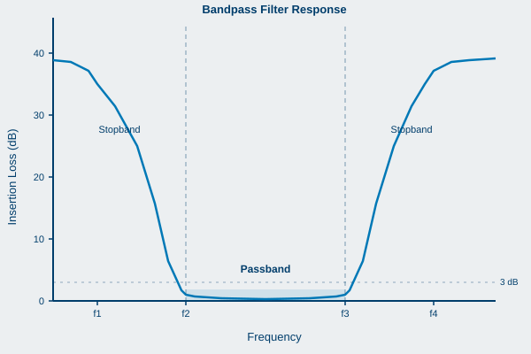
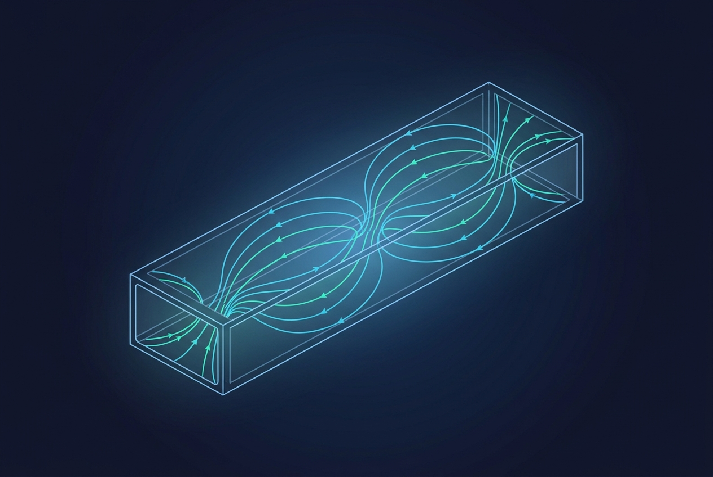
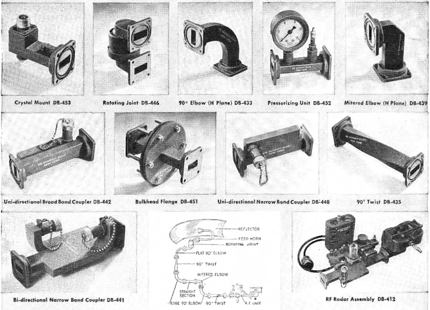
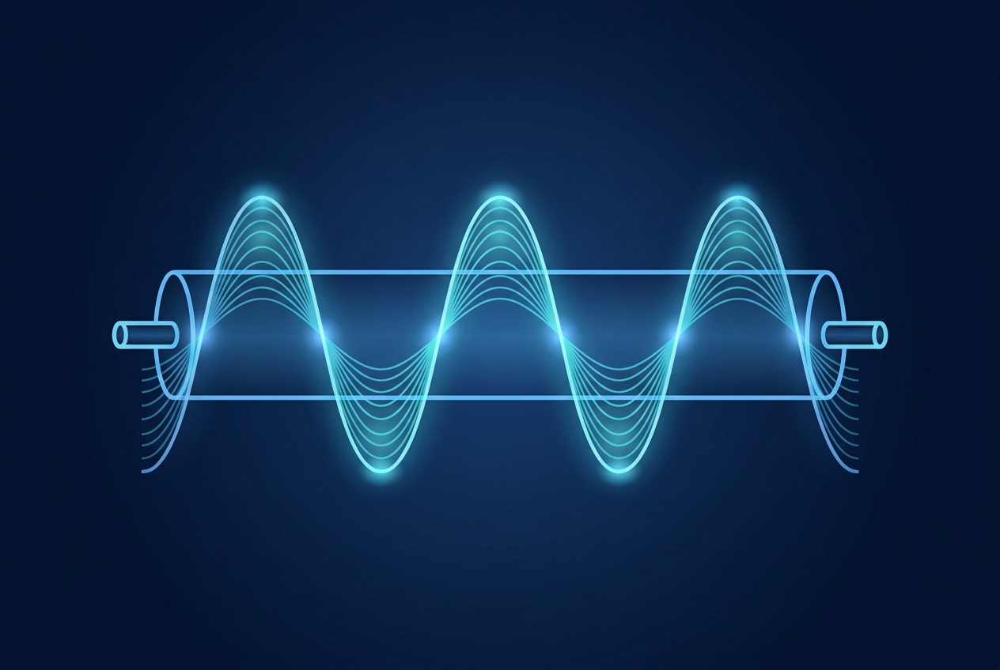

This glossary collects the RF and microwave terms used throughout the book, alphabetized for quick lookup. It builds on the terminology list from the first edition, with definitions cleaned, corrected where needed, and expanded so each entry stands on its own. Where a term has a precise mathematical meaning, the relationship is given alongside the plain-language definition.
A
Attenuation
The loss of signal as it passes through a component or medium, usually expressed as a reduction in amplitude or power. Measured in decibels (dB). Attenuation can be deliberate, as in a fixed attenuator used to protect an instrument input, or unwanted, as in cable loss.
B
Ball Bond
A thermo-compression bond between a metalized pad and a wire whose end has been formed into a ball. Common in semiconductor packaging.
Band Reject Filter
A filter that rejects one band of frequencies while passing both lower and higher frequencies. Also called a notch filter or band-stop filter.

a bandpass filter passes one band and rejects frequencies above and below it.
Bandpass Filter
A filter that passes one band of frequencies while rejecting both lower and higher frequencies.
Bandwidth
The width of the passband of a filter or signal, usually expressed as the frequency difference between the lower and upper 3 dB points. More broadly, the span of frequencies a system can carry.
C
Center Frequency (Fc)
The arithmetic mean of the lower and upper band-edge frequencies, typically taken at the 3 dB relative points: Fc = (F1 + F2) / 2, where F1 and F2 are the lower and upper frequencies at which the defined attenuation occurs. An important parameter of bandpass and band-stop filters.
Conversion Loss
In a mixer, the ratio in dB of the intermediate-frequency (IF) output power to the radio-frequency (RF) input power. Specifications assume all ports are terminated and a stated local-oscillator (LO) drive level is applied.

Below its cutoff frequency a guided structure will not propagate the wave, the basis of waveguide behavior.

a hollow metal waveguide that carries microwave energy above its cutoff frequency.
Cutoff Frequency (Fco)
The passband edge nearest the stopband: the upper edge in a lowpass filter or the lower edge in a highpass filter. Often defined as the point at which a stated VSWR or attenuation is reached.
D
Decibel (dB)
A logarithmic unit expressing a ratio of two power or amplitude values. For power, dB = 10 log10(P2 / P1); for voltage or amplitude into equal impedances, dB = 20 log10(V2 / V1). The decibel turns multiplication into addition, which is why RF gains and losses are summed in dB.
Dynamic Range
The span between the smallest and largest signals a component or instrument can handle at once. For an amplifier, it runs from the minimum detectable signal (3 dB above the internal noise floor) up to the maximum input that can be amplified without unacceptable distortion: Dynamic Range = P1dB - PMDS, where PMDS is the minimum detectable signal.
E
Elliptic Function Filter
A filter design that achieves the steepest possible amplitude transition for a given number of circuit elements, at the cost of poorer phase and transient response than the classical filter types.
Envelope Delay
The propagation delay of the envelope of an amplitude-modulated signal through a network. Proportional to the slope of the phase-versus-frequency curve. Also called group delay. When the delay is not constant across the passband, envelope-delay distortion results.
Eutectic Bonding
A bonding method using an alloy at its eutectic composition, the mixture with the lowest melting point, which transitions directly from solid to liquid without a soft intermediate phase. Provides strong joints and excellent heat transfer for active devices.
G
Gain
The ratio of output power to input power of an amplifier, expressed in dB. Specified in the linear region, where a 1 dB increase in input produces a 1 dB increase in output: Gain (dB) = 20 log10(S21).
Group Delay
The time delay experienced by the envelope of a signal passing through a network, equal to the negative derivative of phase with respect to frequency. See also Envelope Delay.
Group Delay Deviation
The variation in group delay across the passband, often specified peak-to-peak (for example, 10 ns P-P). Excessive deviation distorts modulated signals.
H
Highpass Filter
A filter that passes high frequencies and rejects low frequencies.
I
Insertion Loss
The drop in power as a signal passes through a component. Expressed in dB, it includes both the reflected portion of the incoming signal and the component's own attenuation: Insertion Loss (dB) = 10 log10(Output Power / Incident Power). For a filter, it is the ratio of power delivered to the load with the filter present to the power that an ideal lossless match would deliver.
Isolation
The ratio, in dB, of the power applied at one port to the power that leaks to another port that should be isolated from it. High isolation means little unwanted coupling.
L
Limiting Level
The input power level at which the output goes into compression and ceases to respond linearly to further input.
Linear Phase Filter
A filter whose phase changes at a constant rate with frequency, so a plot of phase versus frequency is a straight line. Such a filter ideally produces constant delay across its passband.
Lowpass Filter
A filter that passes low frequencies and rejects high frequencies.
N
Noise Figure / Noise Factor
A measure of how much a device degrades the signal-to-noise ratio (SNR) of a signal passing through it. The noise factor F is the ratio of input SNR to output SNR per unit bandwidth, with the input termination at the standard temperature of 290 K. The noise figure is its decibel form: NF = 10 log10(F).
Noise Floor
The lowest signal level that produces a detectable output from a component or chain, set by the system's internal noise.
Noise Temperature (Te)
An equivalent temperature representing the thermal noise added by a component or chain, related to noise factor by Te = (F - 1) To, where To is the standard temperature of 290 K. As an example, a 2.0 dB noise figure corresponds to a noise temperature of about 170 K.
O
One dB Compression Point (P1dB)
The point on a plot of output power versus input power where the measured gain has dropped 1 dB below its linear value. Unless otherwise stated, P1dB refers to the output power at that point. It marks the practical onset of nonlinear behavior.
Overshoot
The amount, in percent, by which a signal exceeds its steady-state value on its initial rise in response to a transient.
P
Passband
The frequency range a filter is designed to pass with minimal attenuation.
Passband Ripple
The variation of attenuation with frequency within the passband of a filter.
Phase Shift
The change in phase of a signal as it passes through a network. A delay in time is called phase lag, which in ordinary networks increases with frequency and produces positive envelope delay.
PIN Diode
A diode with a thin intrinsic (I) layer between its P and N regions. It behaves at RF less like a rectifier and more like a variable resistor whose resistance is controlled by DC bias, making it useful for switches and attenuators.
Pulling
The change in a voltage-controlled oscillator's frequency as the phase angle of the load-impedance reflection coefficient varies through 360 degrees. A measure of sensitivity to load mismatch.
Pushing
The change in an oscillator's frequency caused by a change in supply voltage, expressed in MHz per volt (MHz/V).
R
Relative Attenuation
Attenuation measured with the point of minimum attenuation taken as the 0 dB reference.
Return Loss
The ratio, in dB, of incident power to reflected power at a port: Return Loss (dB) = 10 log10(Incident Power / Reflected Power). Equivalently, 20 times the log of the reciprocal of the reflection coefficient. A higher return loss means a better impedance match.
Ringing
The tendency of a filter or network to oscillate briefly when a transient waveform is applied.
Ripple
The wavelike variation in the amplitude response of a filter across its passband. Chebyshev and elliptic-function filters have equal-ripple responses, meaning the peaks and valleys are uniform. Butterworth, Gaussian, and Bessel responses have no ripple. Usually measured in dB.
S
Scattering Parameters (S-Parameters)
A set of values that characterize a network by ratios of reflected and transmitted waves at its ports. For a two-port: S11 (input reflection coefficient) = b1/a1, S12 (reverse transmission, isolation) = b1/a2, S21 (forward transmission, gain or loss) = b2/a1, and S22 (output reflection coefficient) = b2/a2.
Shape Factor
A measure of how steeply a filter transitions from passband to stopband. For a bandpass filter, SF = (attenuation bandwidth) / (3 dB bandwidth); the closer to 1, the steeper the skirts. Defined analogously for band-stop, lowpass, and highpass filters.
Spurious-Free Dynamic Range (SFDR)
The range over which a system is free of distortion products above the noise floor: SFDR = (2/3)(PTOI - PMDS), where PTOI is the third-order intercept and PMDS is the minimum detectable signal.
Stopband
The frequency range in which a filter is intended to reject signals as much as practical.
T
Third-Order Intercept (TOI / IP3)
The theoretical point where the extrapolated fundamental output and the extrapolated third-order intermodulation product, plotted against input power, would intersect. A higher third-order intercept means lower intermodulation distortion for a given signal level, so it is a key measure of linearity.
V
Velocity Factor
The ratio of the speed at which a signal travels in a cable to the speed of light in free space, set by the cable's dielectric. It matters for any time-domain or phase measurement.

Voltage standing wave ratio measures the standing wave a mismatch sets up along a line.standing wave ratio from the reflection coefficient magnitude, a dimensionless ratio.
Voltage Standing Wave Ratio (VSWR)
The ratio of the maximum to the minimum voltage of the standing wave on a transmission line, formed by the sum of incident and reflected waves. An ideal match is 1:1, meaning no reflection. A 2:1 VSWR corresponds to roughly 11 percent of the incident voltage being reflected. VSWR is a common way to express how well a component is matched to the line.
W
Wedge Bond
A bond between a substrate and a wire, named for the wedge-shaped tool used to form it. Common in semiconductor and microwave-module assembly.
References
[1] Berkeley Nucleonics Corporation, "The Nuts and Bolts of Radio Frequency," first edition glossary (David A. Brown), 2022, as the basis for these definitions.
[2] IEEE standard dictionary of electrical and electronics terms, for formal definitions of measurement quantities. Verify current edition before publication.